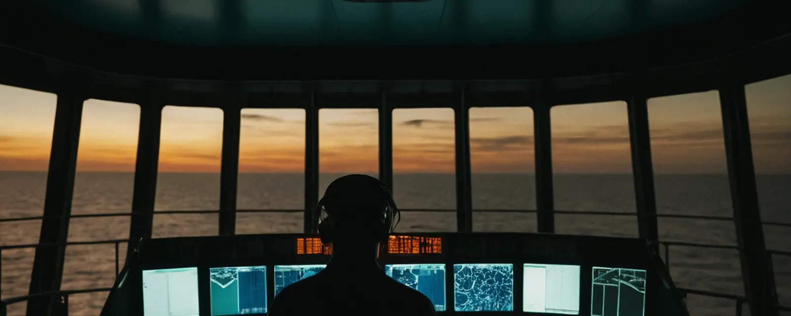
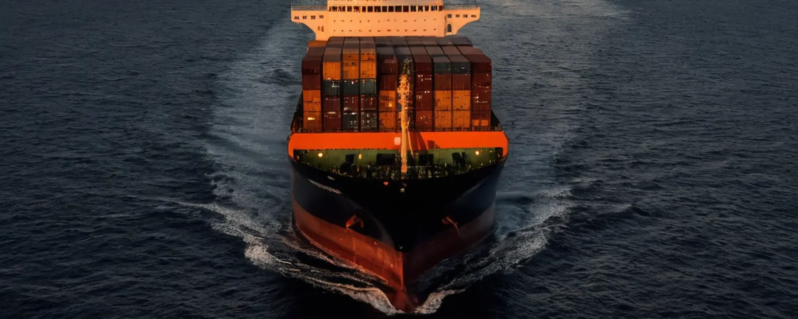
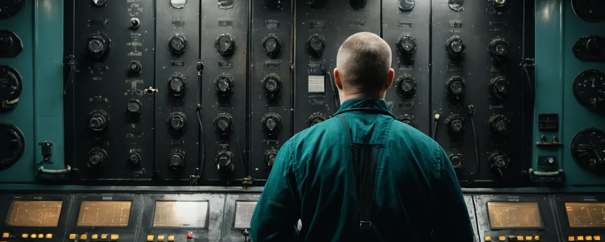

AI performance standards for ship equipment
- PROPOSAL STAGE — NO AI-SPECIFIC IMO STANDARD
- No IMO work item on AI performance standards has been agreed.
- The IMO's invitation refers to a non-mandatory instrument.
The IMO has noted a call for performance standards for AI in ship equipment and invited a proposal for a non-mandatory instrument, but no work on one has been agreed. Its mandatory autonomous-ship code runs on dates the Committee itself says may move. Its cyber code is still a work item. For engineers, the rules that bind a ship today are the ones already on board.

The Maritime Safety Committee's report of its 111th session and an EU Council agenda from July point the same way. Ships and the equipment on them are gaining functions that act, and the rules defining what those functions may do are unfinished. In three areas, AI equipment standards, the mandatory MASS Code and a maritime cyber code, the IMO's new work is at the stage of an invitation to propose work, a target or a code in development. None of it places a new mandatory requirement on an existing ship today. Nor does it displace what already applies: the company's safety management system under the ISM Code, where resolution MSC.428(98) encourages administrations to ensure that cyber risk is addressed; the class requirements that already apply to each ship; and, for new ships contracted on and after 1 July 2024, IACS UR E26/E27.1,2,6,8
Every line below is quoted from this brief. Follow the section links for context and sources.
At MSC 111, which met from 13 to 22 May 2026, the Committee considered a paper from Austria and other co-sponsors, MSC 111/21/2. It set out the case for urgent development of performance standards for AI systems embedded in marine equipment: navigational, radio and other ship systems. The Committee noted the paper and invited Member States and international organizations to work with the co-sponsors on a proposal for a new output: a non-mandatory instrument on the use of AI systems in safety-critical equipment, to be submitted at a future session.1,4,5
On 17 July 2026, the EU Council's Working Party on Shipping met to examine a draft Union submission to MSC 112, which sits in London from 14 to 18 December 2026. The draft proposes a new output to develop a recommendation on performance standards for AI systems embedded in navigational and communication equipment.1,2,3
Status. No IMO work item on AI performance standards has been agreed. The IMO's invitation refers to a non-mandatory instrument. The EU draft, as its agenda item describes it, proposes work towards a recommendation. Neither is an adopted standard, and neither is a requirement on any ship. MIW has read the agenda item, not the draft text. It has not confirmed that the submission reached the IMO in that form.1,2

The IMO has adopted the non-mandatory MASS Code; a mandatory version remains under development. The non-mandatory Code was adopted by resolution MSC.595(111) in May 2026 and came into effect on 1 July 2026 as a voluntary instrument. It applies to cargo ships covered under SOLAS Chapter I, generally ships over 500 GT on international voyages.4,5
Non-mandatory MASS Code adopted, MSC.595(111); in effect from 1 July 2026
ADOPTED — VOLUNTARY
Framework for an Experience-Building Phase to be developed
SCHEDULED
Road-map milestone: development of the mandatory Code, including consideration of SOLAS amendments. A development stage, not a completion date
PLANNED PROVISIONAL
Expected adoption of the first mandatory MASS Code. MSC 111 set 2030 as the target completion year
EXPECTED — MAY BE REVISITED PROVISIONAL
Planned entry into force, which depends on adoption first
EXPECTED — DESCRIBED AS AMBITIOUS PROVISIONAL
Provisional planning targets, not guaranteed dates (MIW engineering analysis).
The Committee's own report qualifies those dates. When MSC 111 extended the target completion year for finalising and adopting the mandatory Code to 2030, several delegations said the 2030 adoption and 2032 entry-into-force timeline appeared unrealistic, and suggested deferring entry into force to 2036. The Committee noted the working group's view that 2032 was ambitious. It agreed to keep working towards 2030 for adoption, recognising that this target may need to be revisited.1
“Treat the 2030 and 2032 milestones as provisional planning targets, not guaranteed dates.”
IACS UR E26, Cyber Resilience of Ships, and UR E27, Cyber Resilience of On-Board Systems and Equipment, apply in their revised form to new ships contracted for construction on and after 1 July 2024. The original versions, which applied to new ships from 1 January 2024, were withdrawn. According to ABS's summary of the rules, they cover passenger ships on international voyages, cargo ships and high-speed craft of 500 GT and upwards on international voyages, mobile offshore drilling units of 500 GT and upwards, and certain self-propelled mobile offshore units. They may be used for other ships only as non-mandatory guidance. In ABS's description, E26 is intended for the ship's design, construction, commissioning and operational life, and is organised under five functions: identify, protect, detect, respond and recover. It requires a cyber resilience test procedure to be developed for the vessel. E27 is aimed at third-party equipment suppliers.6,7
On MIW's reading of that applicability, a ship already in service is not brought into scope by date. For those ships, the IMO instrument is resolution MSC.428(98). It encourages administrations to ensure that cyber risks are addressed in the company's safety management system no later than the first annual Document of Compliance verification after 1 January 2021. The IMO's guidance is MSC-FAL.1/Circ.3/Rev.4.6,8
The next layer is not yet written. At MSC 111 the Committee agreed to be an associated organ to the FAL Committee's output on development of a non-mandatory maritime cyber code, with a target completion year of 2028. It approved the road map, and approved a joint FAL–MSC expert group to meet in 2027, subject to Council endorsement.1
“Until it does, the answer on each ship is the one written into its own procedures, and the test is authority, not intelligence.”
This section is MIW's engineering judgement, drawn from the developments above. It is not a rule, a class requirement or an IMO interpretation.

From function to fallback: four checks for any equipment function that recommends or acts
Follow MIW Subscribe on LinkedIn
| Date | Item | Status |
|---|---|---|
| 14–18 Dec 2026 | MSC 112: Experience-Building Phase framework; whether a new output on AI performance standards is agreed | SCHEDULED / PROPOSAL1,2,3,4,5 |
| 2027 | Joint FAL–MSC expert group on a non-mandatory maritime cyber code | PLANNED — subject to Council endorsement1 |
| 2028 | Non-mandatory maritime cyber code: target completion year · mandatory MASS Code: development milestone | PLANNED1,4,5 |
| By 1 Jul 2030 / 1 Jan 2032 | Mandatory MASS Code: expected adoption / planned entry into force | EXPECTED — MAY BE REVISITED1,4,5 |